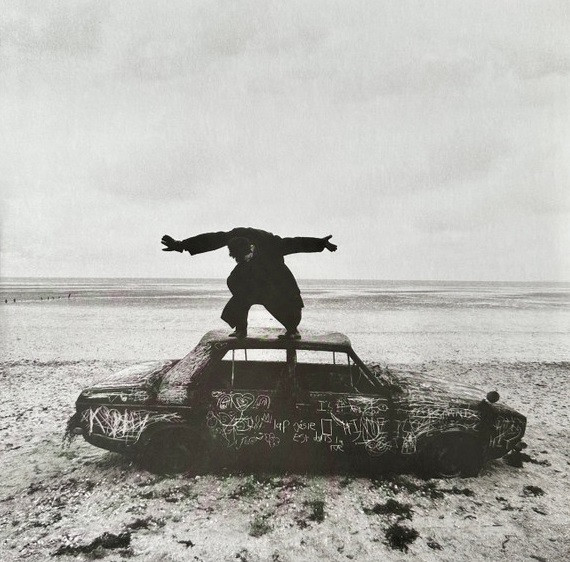
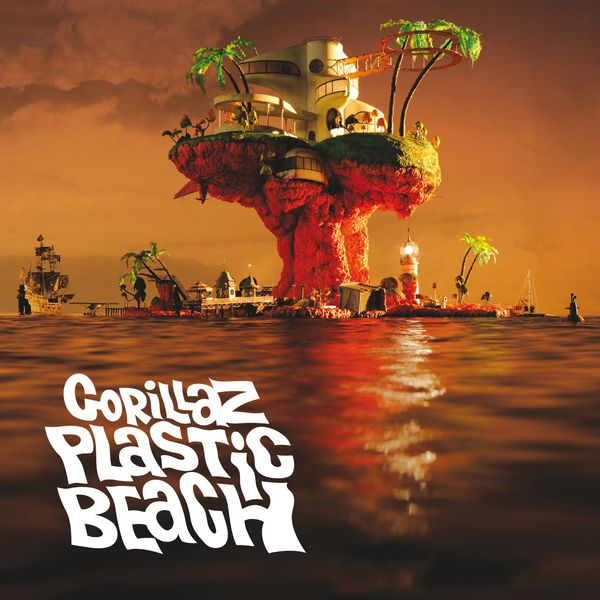
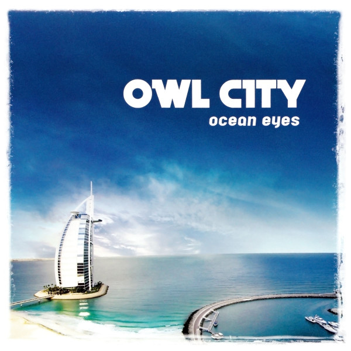
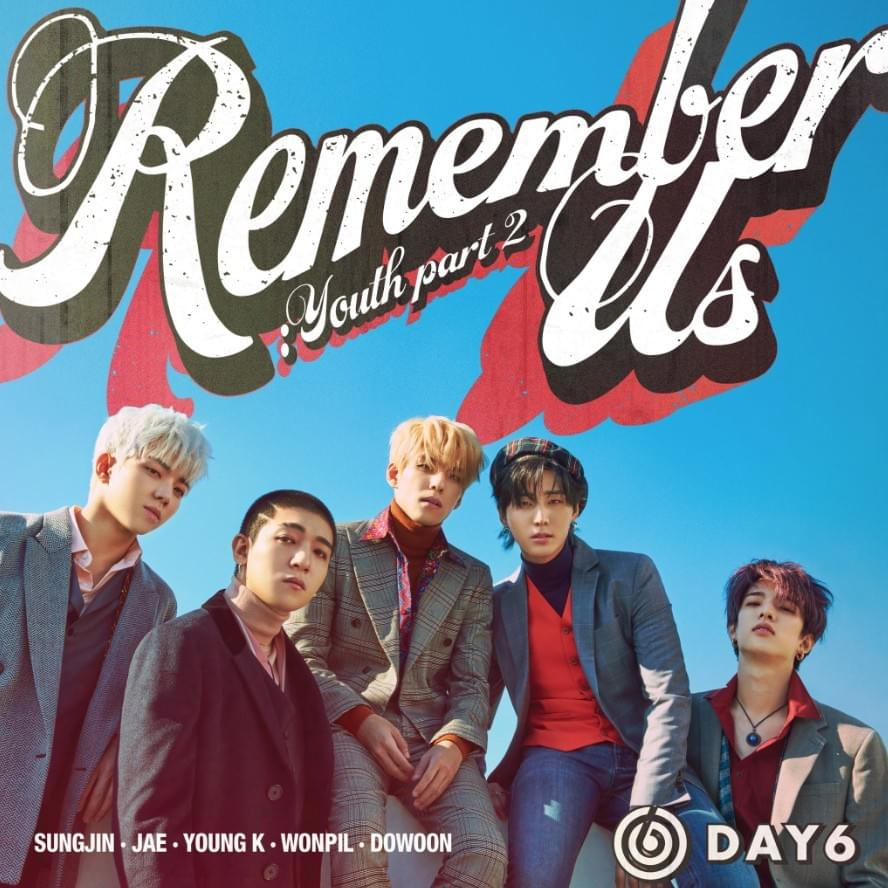
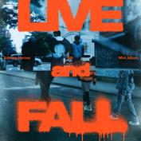
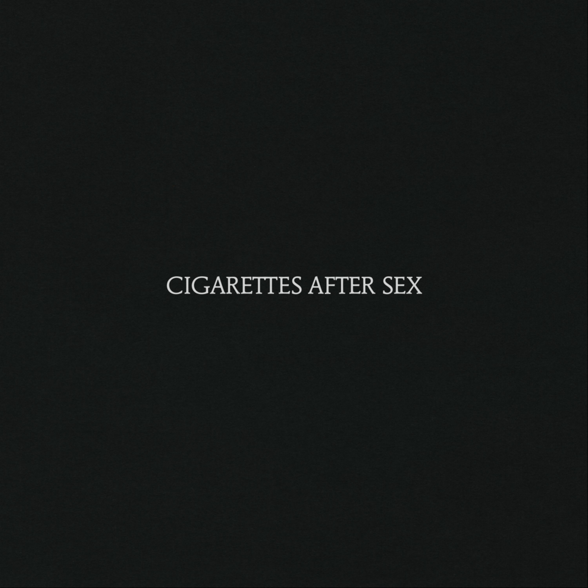
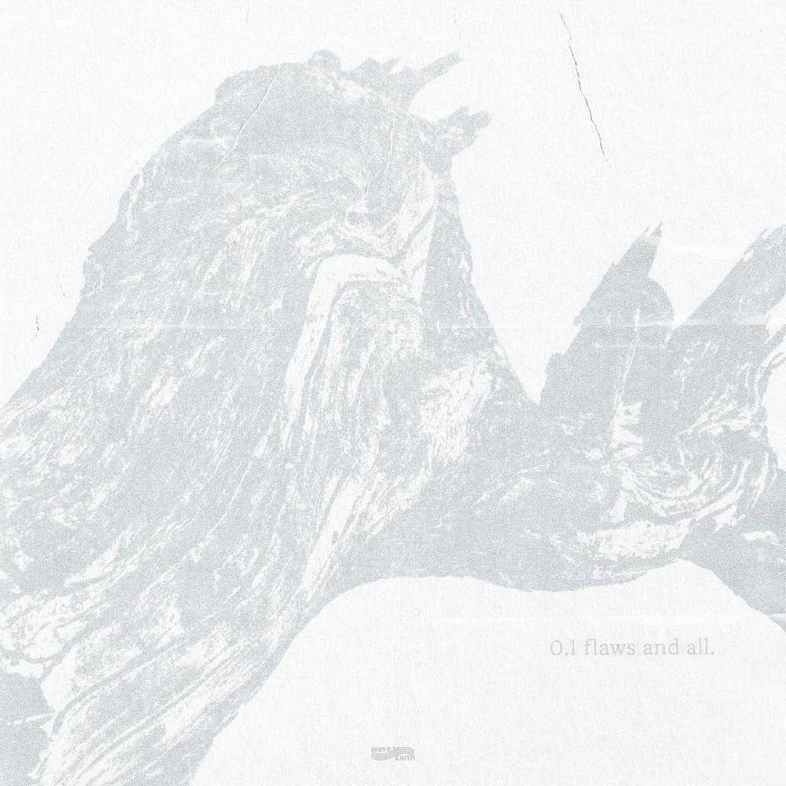
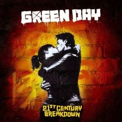

Top 1
About You
The 1975
Being Funny In A Foreign Language (2022)
"About You" by The 1975 is considered a spiritual sequel to their 2013 song "Robbers." The dreamy, nostalgic track features vocals from Carly Holt, the wife of the band's guitarist Adam Hann, making it a rare duet in The 1975's discography.
Top 2
On Melancholy Hill
Gorillaz
Plastic Beach (2010)
"On Melancholy Hill" by Gorillaz was originally written as a straight-up pop song, which Damon Albarn described as the most "heartfelt" track on the Plastic Beach album. Despite its dreamy, synth-heavy sound, the song carries a bittersweet feeling—like searching for hope in a fading world.
Top 3
Fireflies
Owl City
Ocean Eyes (2009)
"Fireflies" by Owl City was inspired by Adam Young’s insomnia and childhood fascination with fireflies in his hometown of Owatonna, Minnesota. The song, with its whimsical lyrics and dreamy synths, became an unexpected viral hit in 2009, topping the Billboard Hot 100.
Top 4
Sparkle
RADWIMPS
Human Bloom (2016)
Sparkle" by RADWIMPS was written for the hit anime film Your Name (Kimi no Na wa). The song captures the themes of fate, longing, and fleeting moments, perfectly mirroring the movie’s time-twisting love story. Its emotional build-up and soaring instrumentals make it one of the most unforgettable tracks in the film.
Top 5
Days Gone By
DAY6
Remember Us : Youth Part 2 (2018)
"Days Gone By" by DAY6 is a nostalgic synth-rock track that blends retro 80s vibes with the band's signature emotional depth. The song reflects on memories of a past love, accepting that while things have changed, the moments shared will always remain. Its upbeat sound contrasts with its wistful lyrics, making it a unique and bittersweet anthem.
Top 6
Night Before The End
Xdinary Heroes
Live and Fall (2024
"Night Before the End" by Xdinary Heroes is an intense, high-energy track that captures the feeling of impending chaos. With its dramatic instrumentals and powerful vocals, the song builds a sense of urgency, as if standing on the edge of something inevitable. It showcases the band’s signature mix of rock and storytelling, making it a thrilling listen.
Top 7

The Only Exception
Paramore
Brand New Eyes (2009)
"The Only Exception" is one of Paramore's rare love ballads and became their highest-charting single at the time. Hayley Williams wrote it as a deeply personal reflection on love, inspired by her parents' divorce and her own journey in believing in lasting relationships.
Top 8
Apocalypse
Cigarettes After Sex
Cigarettes After Sex (2017)
"Apocalypse" by Cigarettes After Sex is one of the band's most well-known tracks, loved for its dreamy, intimate sound. Greg Gonzalez’s soft vocals and hazy instrumentals create a hypnotic atmosphere, making it feel like a song meant for late-night thoughts and quiet longing.
Top 9
love.
wave to earth
0.1 flaws and all. (2023)
"love." by wave to earth embodies the band's signature dreamy, lo-fi sound, blending jazz and indie influences. Known for their minimalist yet emotional approach, the song feels like a warm hug—soft, melancholic, and deeply intimate.
Top 10
Last Night On Earth
Green Day
21st Century Breakdown (2009)
"Last Night on Earth" by Green Day is a rare love ballad from the band, written by Billie Joe Armstrong as a letter to his wife, Adrienne. It stands out on the 21st Century Breakdown album for its soft piano melody and heartfelt lyrics, showing a more tender side of Green Day.